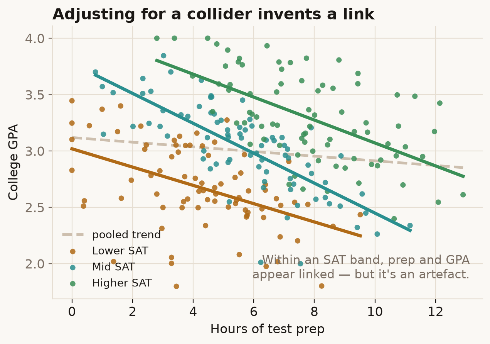

"Control for everything you measured before the treatment" sounds safe. Sometimes it's the opposite: adjusting for the wrong pre-treatment variable can create a bias that wasn't there to begin with.
Try it
Does test prep raise your college GPA? Suppose it truly does nothing. Drag from Ignore SAT to Adjust for SAT — the move most analysts would make without thinking.
What's going on
Ignore SAT and there's no link between prep and GPA — which is the truth here. Adjust for SAT (by comparing students with similar scores) and a downward link appears: among students with the same SAT, the ones who did more prep have lower GPAs. It looks like prep hurts. It doesn't.
SAT is a collider. Two hidden things feed into it: family wealth (which also buys test prep) and innate ability (which also lifts GPA). Prep and GPA have no path between them — until you hold SAT fixed. Among students at the same SAT, a high prep count implies they got there partly on wealth, which means less of the ability that drives GPA. Conditioning on the collider opens a back-door path and links two unrelated things. The DAG looks like an "M", which is where the name comes from.

This is the mirror of confounding. There, adjusting for a common cause removes a fake link; here, adjusting for a common effect creates one. The same keystroke — "control for SAT" — is the cure in one case and the disease in the other.
In the real world
M-bias is the cautionary case against the habit of throwing every available pre-treatment covariate into a regression. Sander Greenland formalised it as "collider-stratification bias" in 2003; later work (Ding & Miratrix) showed that in practice its size is usually modest unless the collider is strongly driven by both hidden causes — but the direction of the lesson stands: which variables you adjust for has to come from a causal model, not from what happens to be in the spreadsheet.
How not to get fooled
"Adjust for everything" is not a strategy. A variable is only safe to control for if you know its place in the causal structure; adjusting for a collider (or anything downstream of the treatment) can do harm. When you can, sketch the diagram first and let it tell you what to condition on.
Sources
- S. Greenland (2003), Quantifying biases in causal models: classical confounding vs collider-stratification bias, Epidemiology, 14(3): 300–306. doi
- P. Ding & L. W. Miratrix (2015), To Adjust or Not to Adjust? Sensitivity Analysis of M-Bias and Butterfly-Bias, Journal of Causal Inference, 3(1): 41–57. doi
- J. Pearl (2009), Causality (2nd ed.), Cambridge University Press — colliders and the back-door criterion.